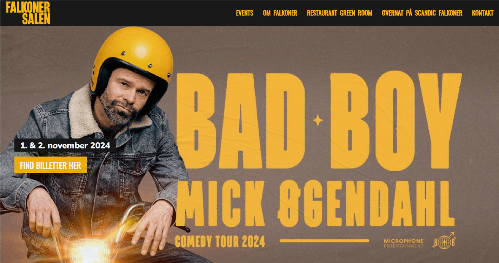

Falkonersalen

📌 Click the image above or follow the link below to visit website
This project had a smaller budget and didn't involve much development. I took care of setting up the basics in the frontend, so we had a core shell to the design.
I also worked with the backend, creating a proper user experience with a correlation between the backend options and frontend appearance.
Note: After the successful development, Scandic decided to move all their sites to a WordPress solution hosted with Peytz. While I wasn't involved in the development of these sites (only small improvements), I took care of the launch.
Visit site